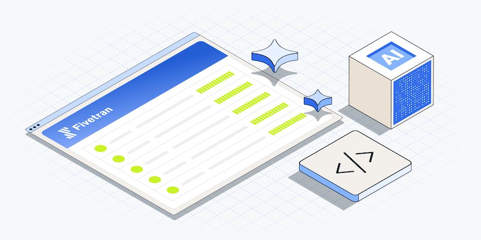

Data insights
We built our own status page with AI, replacing a $65k SaaS product
August 7, 2026

Vice President, Platform Engineering
Share
Two engineers used AI coding agents to design, build, and ship a production-ready status page — here's what worked, what didn't, and what we'd do differently.
In about 4 months, 2 Fivetran engineers — Valentina Mačković and Jelena Kostic — designed, built, and shipped a replacement for a $65,000-a-year SaaS product, using AI coding agents from requirements through production. It now serves Fivetran's public status page and roughly 26,000 notification subscribers. This is what it actually cost, what actually worked, and what we got wrong.
Background: What we were replacing
Fivetran's status page was a heavily customized application that ran on Atlassian Statuspage. It did the job it was designed for, but our use of it had drifted well past the native capabilities of the Statuspage framework. Our status page displays a large number of individually monitored services, and we wanted per-service status and uptime for each of them. This is a shape the hosted product was never really built around. So we layered customization on top: Google Cloud Functions computing uptime from our BigQuery data warehouse, an incident tracker syncing state, and automation wiring it into our incident management process.
The result was a system with real operational costs on both sides of the ledger:
- Money: It cost about $65,000 per year, driven substantially by the fact that every notification subscriber is billable. We had ~26,000 of them.
- Time: We spent a consistent number of hours managing, troubleshooting, and fixing the status page, adding up to at least $10,000 of engineer time per year.
- Performance: The page loaded slowly, and sometimes failed to load on a first attempt. For a page whose entire purpose is to be available when everything else is not, that is a serious failure mode.
- Silent failures: We hit cases where updates did not propagate, and we didn’t detect the deficiency.
- Rate limits: Our own automation ran into the vendor's API rate limits.
To be fair to Atlassian, none of this is a scandal. It is what happens when you push a general-purpose product a long way past its intended shape, and it is also the ordinary arithmetic of per-subscriber pricing at 26,000 subscribers. In this post, we’ll show how it’s possible to use AI to replace a system that’s outgrown its requirements.
[CTA_MODULE]
Why we decided to move
The status page sits in an unusual spot. It is a small application — a handful of read endpoints, an admin panel, an email queue — but it carries production-scale consequences. When Fivetran has a bad day, it is the artifact thousands of customers look at, and a mass notification event can mean 50,000+ emails. Low complexity, high stakes.
That combination is precisely what made it interesting. A year ago, a DIY status page would have been an easy “no”: the engineering cost dwarfed the license. What changed is that AI shifted where that line sits for a certain class of software — well-specified, modest in complexity, expensive to rent. We would soon find out whether this line shifted far enough.
What drove the build-vs-buy decision
Three things, in order of weight:
- Control over reliability. A status page that depends on a third party can only ever be as reliable as that third party, and we could not fix the parts that were slow. Owning it meant we could decouple it from both our own core platform and from an external provider.
- The pricing model was misaligned with the product. We were paying per subscriber for what is, structurally, a mailing list. Costs scaled with customer growth while the value delivered did not.
- We wanted the organizational answer, not just the software. Could 2 engineers using AI agents deliberately take something from a PRD to production? If yes, that is a reusable capability. The status page was a good place to find out because the blast radius of getting it wrong was survivable. We could run it in parallel with the old one until we trusted it. We could also call the experiment a failure without pouring a huge amount of time, money, and effort into it.
We also want to be honest about the boundary of the conclusion. Fivetran's own product is a SaaS product, and we are not arguing that AI makes SaaS obsolete. A status page is far easier to replace than a data movement platform. But the same logic applies at the margin to any vendor: the more your usage is a thin, well-specified slice of a general product, the more the build side of the equation has moved.
How we built it
Setting up AI
The most important decision the team made was to spend a long time not writing code.
Before any feature work, Valentina and Jelena built what amounted to an onboarding program for AI agents. They wrote a CLAUDE.md defining project rules and a 16-step development process. They defined 6 agent roles, each with its own initialization file:
| Agent role | Owns |
|---|---|
| Project lead | Delegation and sequencing; never writes code or documents |
| Product manager | Scope, requirements, task breakdown, approvals |
| Software architect | Technical design, API contracts, code review, merges |
| Software engineer (BE / FE) | Java backend and React/TypeScript frontend implementation |
| QA engineer | End-to-end tests, bug triage |
| SRE engineer | Deployment, monitoring, GCP operations |
Alongside the roles, they built a library of skills — reusable instruction sets for backend conventions, frontend patterns, clean code, JUnit, Bazel, Nx, QA, and version control. Agents communicate only with each other; when one is unsure, it makes a documented best-effort decision rather than stalling for a human. Each feature gets its own git branch and worktree, so several agent teams can run concurrently without colliding.
They also gave the agents something most AI coding attempts skip: a real specification. The PRD and TDD were written as proper documents, converted to markdown, and handed to the agents as context, along with an OpenAPI schema defining every endpoint and a set of Figma design assets for the UI. We decided to implement the UI design as-is, making it possible to automate much of the Figma and UX design with the existing status page as a reference.
The effort split is the key finding of this whole project:
| Work | Estimated hours |
|---|---|
| Requirements and design (PRD, TDD) | 52 |
| Specification prep for agents (context docs, OpenAPI, design assets) | 88 |
| Agent tooling and orchestration (roles, skills, CI/CD, process) | 160 |
| Total invested before feature work | 300 |
| Producing the MVP itself | 162 |
It took roughly two hours of preparation for every hour of building. That ratio is not a failure of efficiency, but the mechanism. The agents were fast precisely because the context had already removed all ambiguity.
Working with AI
Once the harness was in place, the MVP came together quickly. The prototype repository's entire commit history runs from 4 March to 15 April 2026: 6 weeks, 46 pull requests. The first 3 weeks are almost entirely context and skill files. Then, over about 2 weeks in late March and early April, the features land in sequence: groups CRUD, services CRUD, database setup, incidents, maintenance windows, the public page, CI, unit tests, deploy workflows.
The working pattern that emerged:
- Small tasks beat large ones. The team explicitly tested this and made it policy. Large feature requests produced sprawling, hard-to-review pull requests that often had to be thrown away.
- The architect role earns its keep. Having a dedicated reviewing agent with house conventions loaded caught structural problems before humans saw them, including a full refactor of the backend.
- The humans owned the contract, not the keystrokes. Valentina and Jelena decided what correct looked like — the API shape, the data model, the rollout sequence — and verified that the output matched. AI wrote the code. The engineers built the system.
Pitfalls
We would be doing nobody a favor by pretending this was smooth. There were a few places where the endeavor was more complicated than expected:
- Agents redo work. Groups CRUD was implemented in 4 separate pull requests, Services CRUD in 5. Of 46 pull requests in the prototype repo, 8 were never merged, consisting of abandoned duplicates and dead ends. Without a human tracking what was actually done, parallel agents happily re-solve solved problems.
- Working with AI is a new paradigm. The initial MVP was as much of a learning exercise as it was a project execution. This was a one-time tax for our engineers to make mistakes and correct them. With lessons learned, we can now take to other projects and work more confidently and efficiently. We spent as much as 25% of the overall effort on this phase, which skewed the cost of developing a status page higher.
- House conventions are not free. The first backend did not match Fivetran's build system or code standards and had to be restructured. Every convention you care about has to be written down somewhere the agent will read it. This collection of knowledge is what the skills library eventually became.
- A demo is not a production system. While AI accelerated the initial implementation, turning that prototype into production-quality software required significant engineering effort.
Making it production-ready
The MVP was done at the end of April and went live in late July. That gap is the story.
Turning the prototype into something we would put in front of customers took 72 tracked work items in the main production epic and another 17 in pre-release bug fixing. Almost none of it was feature work. It was:
- Moving into the monorepo: The prototype lived in a standalone repository. Production code lives in our production GitHub repo with a common Bazel build system and CI.
- Authentication and authorization: The prototype could fake authentication; a production version needs it to work for real. We implemented Okta for the admin panel across staging and production, with role-based permissions and API token management.
- Real infrastructure: Using Cloud SQL Postgres, we built a staging environment with continuous deployment and structured logging.
- Integration with everything else: We rewired our existing data-aggregator and public-incident-tracker Cloud Functions to write to the new API, enabled automatic incident creation from our incident management system, built a Java client so the product dashboard reads from our backend instead of the vendor's, and delivered it all behind a feature flag.
- The subscriber migration: 26,000 subscribers had to move without anyone losing their notifications or getting duplicates. This alone was a 40-hour scripting effort plus follow-on data corrections.
- Auditability: Every change to an incident, service, group, or subscriber is captured by a database trigger into an audit log.
- Scale testing: A widespread incident can generate 50,000+ email events. We stress-tested to a sustained 9,000 notifications in 5 minutes.
- A long tail of correctness bugs: Special characters rendered incorrectly in incident titles. Incidents older than 30 days were not affecting the uptime bar. There were double status transitions on maintenance windows, and uptime discrepancies between the old and new aggregation. None of these are interesting, but all of them would have been noticed by customers.
Production hardening was 56% of the total effort — more than the requirements, the agent harness, and the entire MVP combined. If there is one number to take from this post, it is that one.
Deploying to production
We ran a deliberately boring rollout.
- Staging: We took a full QA pass on both the public page and the admin panel.
- Production, silent: The new system deployed to production with full data and all automations live — but notifications were disabled, and there was no customer traffic. It ran alongside the old page on a separate domain, staying correct on its own, for weeks.
- DNS swap: Customer traffic moved to the new page. Notifications were still off.
- Notifications on: The last and least reversible step, taken only once the rest had soaked.
The system was then validated the way you never plan for: a real P1 incident that required notifying the full subscriber base. The fanout to all ~26,000 subscribers went out from the new system. That was the moment it stopped being an experiment.
Reliability
A status page has an unusual reliability requirement: it must survive the failure of the thing it reports on. Its dependencies are therefore a design constraint, not an implementation detail.
What we deliberately decoupled:
- Separate database: The status page runs on its own Postgres instance, not shared with core platform systems.
- Separate domain and deploy pipeline: Status page releases are not coupled to product releases, and a bad product deploy cannot take the page down.
- Separate GCP project: It runs in a separate GCP project and AZ from where we run any Fivetran control plane or data movement functions.
- Admin path independence: Our Support team can publish incident updates even when the product is unhealthy because the admin panel does not depend on the product.
Why only one region?
Today, the status page runs in a single GCP region. That is a deliberate, and temporary, trade-off. The failure we are actually defending against is a Fivetran platform incident — and against that, single-region isolation is fully effective. Defending additionally against a regional cloud outage is a different and much rarer failure, and it roughly doubles the infrastructure and operational cost of a system whose entire economic argument is that it is cheap to run.
We chose to ship the version that solves the common case and prove it in production. Our requirement is that our status page survives a CSP regional outage. With the status page being served outside of Fivetran regions, that meets the initial outage requirement. We intend to make the system as reliable as it needs to be, which could mean a cached copy in another CSP, but probably no more.
Cost
Effort figures below come from estimates recorded on tracked work items, not from logged timesheets. They cover engineering work captured in our tracker and exclude management, QA, and design time that was not separately tracked. Dollar figures use an illustrative fully-loaded rate of $100/engineering-hour rather than actual compensation. Treat them as a good-faith order of magnitude, not an audited figure.
What we were paying
We paid ~$65,000 per year for Atlassian Statuspage, largely driven by billable notification subscribers at ~26,000 subscribers — plus the internal engineering time spent maintaining the customizations, Cloud Functions, and automations layered on top of it. Not to mention working around its rate limits and silent failures. That internal cost was real but never separately budgeted, which is itself part of why the true cost of the status quo was invisible.
What it cost to build
| Phase | Hours | Share |
|---|---|---|
| Requirements and design (PRD, TDD) | 52 | 5% |
| Specification prep for agents | 88 | 8% |
| Agent tooling and orchestration | 160 | 15% |
| AI-generated MVP | 162 | 16% |
| Product hardening and rollout | 537 | 51% |
| Pre-release bug fixing | 50 | 5% |
| Total to production | ~1,050 | 100% |
That is roughly 131 person-days, or 6.6 person-months. This amounted to 2 engineers over about 4 months of calendar time, which matches what actually happened.
At an illustrative $100/hour fully loaded, the one-time build cost is approximately $105,000. The cost of the AI tokens the team consumed was at most around $4,500, so added up the total build cost is around $109,500.
What it costs to run
| Component | Annual |
|---|---|
| Infrastructure (GCP: cluster, CloudSQL, egress) | ~$2,400 – $4,800 |
| Ongoing engineering (~0.1 FTE for maintenance and improvements) | ~$10,000 |
| Annual forecast run rate | ~$12,400 – $25,000 |
The maintenance forecast is grounded in what the post-launch backlog actually looks like: 29 open items covering resilience work, subscription management, UI polish, and frontend refactoring. Notably, the notification volume that made the vendor expensive costs us almost nothing to serve ourselves — it is a queue and an email sender using a system we already have in place for customer notifications.
The honest arithmetic
We had annual savings of roughly $40,000 – $53,000, against a one-time build of about $109,500. That is a payback period of roughly 2.5 years, after which it compounds.
This is the part worth sitting with. The headline version of this story is "2 engineers replaced a $65K product." The true version is that the build cost more than the annual license, the savings are real but not immediate, and the strongest arguments for having done it are not purely financial:
- The page is faster and more reliable, which is the thing customers actually experience.
- Costs no longer scale with subscriber count, so the savings grow as Fivetran grows.
- We can now build features the vendor did not offer at marginal cost.
- We now have a reusable AI development harness. This includes the roles, skills, and process for AI development. It was a one time 300 hour cost and applies to the next project, in addition to 2 more engineers who have real-world production experience with building products with AI.
Anyone doing this math for their own status page should expect a similar shape. If your bill is $10,000 a year rather than $65,000, the answer is probably still "keep buying it." That is a real conclusion, and we would rather publish it than a more flattering one.
What we learned
Specification is the bottleneck, not code generation. We spent 2 hours preparing for every hour of building, and that was the right ratio. The teams that will get the most from AI agents are the ones that were already good at writing down what they want.
The last mile is still a mile. Production hardening was 56% of the effort — larger than requirements, tooling, and the entire MVP combined. AI compressed the part of software development that was already the fastest part. Integration, migration, authentication, observability, and the long tail of correctness bugs did not compress nearly as much. Any estimate that extrapolates from "we had a working demo in 2 weeks" will be wrong by a factor of 2 or more.
Agents need a manager, and it cannot be another agent. Duplicated work, hallucinated UI, and the occasional dice roll app are not edge cases; they are the normal failure mode. The value the engineers added was judgment about what correct meant and verification that the output met it.
The economics have genuinely moved for a specific class of software. “Well-specified, modest complexity, priced on a dimension that scales badly for you” describes a real and growing set of line items in most companies' SaaS spend. It does not describe most software.
Small teams are now capable of surprising things. Two engineers took a system serving 26,000 subscribers from a blank repository to production in 4 months, and validated it under a real P1. That is the result we would most want other teams to take seriously.
The new status page is live at status.fivetran.com. It was designed, built, and shipped by Valentina Mačković and Jelena Kostic.
[CTA_MODULE]
Fivetran can help you with AI readiness.
Ready to get started with Fivetran?
Share
Related blog posts
Heading
Start for free
Join the thousands of companies using Fivetran to centralize and transform their data.
Thank you! Your submission has been received!
Oops! Something went wrong while submitting the form.